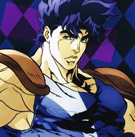
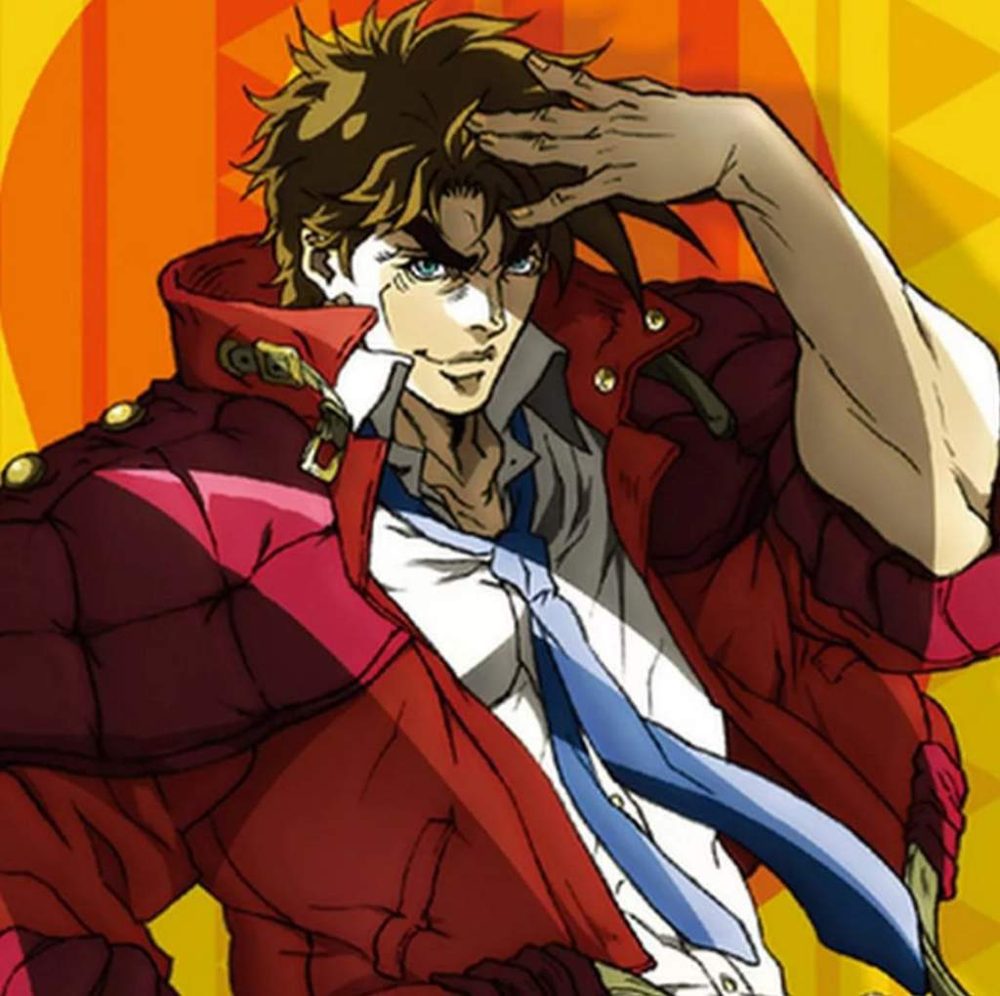
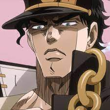
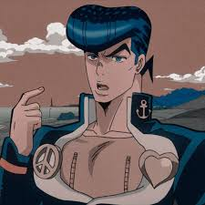
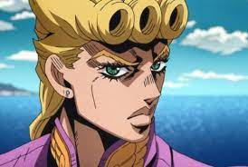
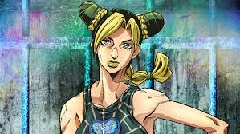
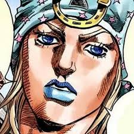
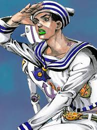
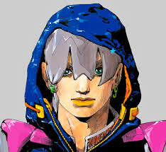

Часть 1ː Phantom Blood
Действие происходит в Великобритании, в XIX веке. Молодой сын богатого помещика Джорджа Джостара, Джонатан вынужден делить дом вместе с новым сводным братом — Дио Брандо. Тот в свою очередь намеревается заполучить наследство, по праву принадлежащее Джонатану. После тщетных попыток Дио обращается в вампира, надевая на себя таинственную каменную маску, убивает Джорджа и сжигает поместье[10]. Джонатан отправляется в путешествие и находит новых союзников, осваивая боевую технику «хамон» (яп. 波紋 Хамон), с помощью которой можно победить нежить, в том числе и Дио с его новыми слугами-мертвецами.
Часть 2ː Battle Tendency
Действие переносится в 1939 год. Немецкая экспедиция находит в Мексике среди руин окаменелого человека и оживляет его. Однако нацисты не осознают опасность находки, и пробуждённый «человек-из-колонны» (яп. 柱の男 хасира но отоко) («пиллармены») убивает работников лаборатории и сбегает, чтобы затем пробудить ото сна своих собратьев. Вместе они намереваются вернуть господство над человечеством. Древним вампирам должен противостоять Джозеф Джостар, главный герой и внук Джонатана Джостара. Джозеф объединяется с новыми союзниками и осваивает навык владения боевой техникой «хамон», так как только с помощью хамона возможно уничтожить тело вампира.
Часть 3ː Stardust Crusaders
Действие происходит в 1987 году. Дио Брандо пробуждается от долгого сна, когда саркофаг с его телом был вытащен рыбаками со дна Атлантического океана. Становится ясно, что Дио сумел захватить тело Джонатана[K 5][11]. По этой причине у всех потомков Джонатана пробуждаются «стенды» (яп. スタンド сутандо)[2]. Их получают Джозеф Джостар, его дочь Холли Кудзё и внук Дзётаро Кудзё. Холли, однако, не может справиться со своей новой силой, и ей остаётся жить не более 50 дней. Единственный способ спасти Холли — убить Дио до истечения данного срока. Так Джозеф, Дзётаро и их новые союзники отправляются в путешествие через страны Средней Азии и сталкиваются по пути с приспешниками Дио[2].
Часть 4ː Diamond Is Unbreakable
Действие происходит в Японии в 1999 году. Семья Джостаров узнаёт, что у Джозефа есть внебрачный сын — Дзёсукэ Хигасиката, который проживает в японском городе Морио. Сам Дзёсукэ вскоре узнаёт о наличии в городе артефактов — «лука и стрелы», способных делать из людей новых носителей стендов. По мере поисков артефактов, Дзёсукэ и его новые союзники, в том числе приехавший в город Дзётаро Кудзё, узнают о более серьёзной угрозе в лице серийного убийцы Ёсикагэ Киры и владельца стенда, который не оставляет никаких следов после себя.
Часть 5ː Golden Wind
Действие происходит в Италии, в Неаполе, в 2001 году. Главным героем становится Джорно Джованна, который формально является сыном Дио Брандо, но биологическим потомком Джонатана Джостара[K 6]. Джорно хочет стать боссом мафии, чтобы избавиться от наркоторговцев, продающих наркотики детям. Команда, к которой он присоединяется, состоит из носителей стендов, должна бороться против босса мафии Дьяволо и защищать его дочь — Трис Уну, которую Дьяволо намеревается убить, чтобы скрыть свою личность.
Часть 6ː Stone Ocean
Действие происходит в 2011 году, в порту Сент-Люси, во Флориде. Дочь Дзётаро Кудзё — Джолин Кудзё — сажают в тюрьму[11] из-за несчастного случая. В заключении девушка сталкивается с таинственным стендом Уайт Снейком, действующим без хозяина и способным забирать у цели «стенд и душу», обрекая её на кому и затем смерть. Его очередной жертвой становится Дзётаро, прибывший в тюрьму, чтобы забрать оттуда Джолин. Героиня должна скорее спасти отца и для этого объединяется с другими заключёнными, обладающими стендами[13].
Часть 7ː Steel Ball Run
Это альтернативная история, не связанная с предыдущими частями JoJo, является интерпретацией первой части Phantom Blood[6]. Многие персонажи являются инкарнациями героев из первых шести частей франшизы[6][11]. Действие этой истории происходит в 1890-е годы в США, во время международных скачек на лошадях. Победителю обещана награда в 50 миллионов долларов. Сюжет представляет двух главных героев — Джайро Цеппели и Джонни Джостара, которые также принимают участие в гонках[11]. За гонками следит президент США Фанни Валентайн, который намеревается найти святые мощи, способные расширять силы стенда носителя. С помощью новой силы Валентайн хочет сделать США сильнейшей державой мира[14]. Однако мощи находят Джайро и Джонни, и теперь главные герои должны защищаться от тайных агентов, работающих на президента.
Часть 8ː JoJolion
Действие происходит в 2011 году в Японии. Сюжет является интерпретацией четвёртой части Diamond Is Unbreakable[6]. В вымышленном городе Морио в результате землетрясений и цунами стали появляться возвышенности неясной природы с симметричными отверстиями[15]. Молодая девушка по имени Ясухо Хиросэ находит под завалами молодого человека, страдающего амнезией, и называет его «Дзёсукэ»[11]. Главный герой пытается раскрыть тайну своего прошлого и узнаёт, что является слиянием двух разных людей. Дальнейшее изучение своего прошлого приводит главного героя к тому, что он сталкивается с деятельностью преступного синдиката в городе[11], который продаёт плоды таинственного дерева локакака, способные исцелять людей и «забирать» что-то взамен[6].
Часть 9ː The JoJoLands
Действие происходит в 2020-х годах на острове Оаху, в Гавайях. Главный герой Джодио Джостар хочет разбогатеть. Он вместе со своим братом Драгоной Джостар работает в преступной организации, занимаясь продажей наркотиков и воровством. Однажды Джодио и Драгоне поручают украсть стоящий целое состояние алмаз у богатого японского туриста. Герои не подозревают, в какие опасные события оказались втянуты[16].